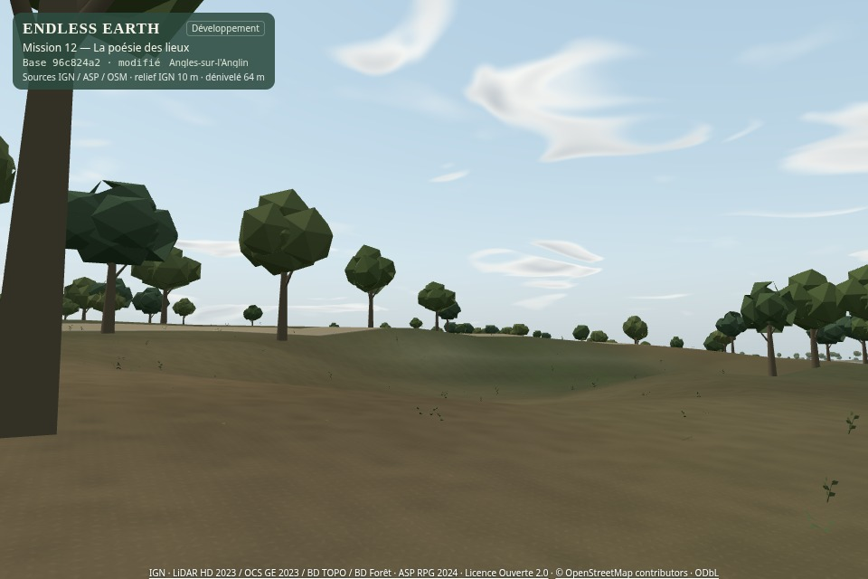

Douze vues, des conditions identiques
À gauche : B livré, commit 96c824a. À droite : C. Les 2 500 ancrages d’arbres, leurs tailles et classes sont conservés ; les individus et formes restent des interprétations dans des habitats cartographiés, sans inventaire botanique local.
Sous les couronnes
Équilibré · 960 × 640 · 2026-06-21T13:57:47.015Z
Conditions de comparaison
[-430, 340, 1, -0.12, 0, 'first']Mêmes caméra, date, météo et profil. Les stations photographiques sont des poses de diagnostic ; leur présence ne documente pas un accès piéton réel.
La forêt depuis le ciel
Équilibré · 960 × 640 · 2026-06-21T13:57:47.015Z
Conditions de comparaison
[-430, 340, 0.5, 0.5, 110, 'aerial']Mêmes caméra, date, météo et profil. Les stations photographiques sont des poses de diagnostic ; leur présence ne documente pas un accès piéton réel.
Une lisière irrégulière
Équilibré · 960 × 640 · 2026-06-21T13:57:47.015Z
Conditions de comparaison
[-300, 340, 1.4, 0.02, 0, 'first']Mêmes caméra, date, météo et profil. Les stations photographiques sont des poses de diagnostic ; leur présence ne documente pas un accès piéton réel.
Au pied des arbres
Équilibré · 960 × 640 · 2026-06-21T13:57:47.015Z
Conditions de comparaison
[-426.72308821603656, 346.51291632745415, 0.7853981633974483, 0.48, 0, 'first']Mêmes caméra, date, météo et profil. Les stations photographiques sont des poses de diagnostic ; leur présence ne documente pas un accès piéton réel.
La végétation près de l’eau
Équilibré · 960 × 640 · 2026-06-21T13:57:47.015Z
Conditions de comparaison
[-100, 300, 0.6, -0.08, 0, 'first']Mêmes caméra, date, météo et profil. Les stations photographiques sont des poses de diagnostic ; leur présence ne documente pas un accès piéton réel.
Une prairie cartographiée
Équilibré · 960 × 640 · 2026-06-21T13:57:47.015Z
Conditions de comparaison
[320, -40, -1.2, 0.24, 0, 'first']Mêmes caméra, date, météo et profil. Les stations photographiques sont des poses de diagnostic ; leur présence ne documente pas un accès piéton réel.
Un vent modéré
Équilibré · 960 × 640 · 2026-06-21T13:57:47.015Z
Conditions de comparaison
[-430, 340, 1, -0.12, 0, 'first']Mêmes caméra, date, météo et profil. Les stations photographiques sont des poses de diagnostic ; leur présence ne documente pas un accès piéton réel.
Le régime orageux et ses rafales
Équilibré · 960 × 640 · 2026-06-21T13:57:47.015Z
Conditions de comparaison
[-430, 340, 1, -0.12, 0, 'first']Mêmes caméra, date, météo et profil. Les stations photographiques sont des poses de diagnostic ; leur présence ne documente pas un accès piéton réel.
Les nuances du printemps
Équilibré · 960 × 640 · 2026-04-21T13:55:15.041Z
Conditions de comparaison
[-430, 340, 1, -0.12, 0, 'first']Mêmes caméra, date, météo et profil. Les stations photographiques sont des poses de diagnostic ; leur présence ne documente pas un accès piéton réel.
Des automnes différents
Équilibré · 960 × 640 · 2026-10-21T13:16:43.682Z
Conditions de comparaison
[-430, 340, 1, -0.12, 0, 'first']Mêmes caméra, date, météo et profil. Les stations photographiques sont des poses de diagnostic ; leur présence ne documente pas un accès piéton réel.
Les branches en hiver
Équilibré · 960 × 640 · 2026-01-21T13:29:21.440Z
Conditions de comparaison
[-430, 340, 1, -0.12, 0, 'first']Mêmes caméra, date, météo et profil. Les stations photographiques sont des poses de diagnostic ; leur présence ne documente pas un accès piéton réel.
Les conifères en hiver
Équilibré · 960 × 640 · 2026-01-21T13:29:21.440Z
Conditions de comparaison
[521, 269, 1.4, -0.12, 0, 'first']Mêmes caméra, date, météo et profil. Les stations photographiques sont des poses de diagnostic ; leur présence ne documente pas un accès piéton réel.
Le vent, vraiment enregistré
Une inspection de forêt à une position compatible avec les collisions, puis les commandes ordinaires Ensoleillé → Nuageux → Orageux, onze secondes par régime. Le film et le son post-limiteur conservent leur durée réelle ; aucun ralenti, accélération ou mouvement de feuilles ajouté au montage. La machine utilise SwiftShader ; le nombre d’images reste celui réellement rendu.
Avant · BAprès · C
Les graines et ancrages sont stables. Les films ne sont pas synchronisés image par image : le timestep plafonné et le coût logiciel font avancer la simulation différemment.
Une promenade distincte
Même contrôle automatique et mêmes voies OSM dans le village. Ces deux films ne documentent pas une liaison piétonne avec la station de forêt.
Référence BC · promenade ordinaire avec collisions et son
Choisir la forme selon la distance
Deux approches procédurales ont été comparées dans le vrai moteur. Les bouquets ajourés sont retenus à proximité, avec 84 triangles par couronne ; les volumes partagés de 60 triangles restent au loin et dans Éco. Les branches de 40 triangles sont partagées, sans objet ou animation CPU par arbre. Les imposteurs orientés vers la caméra sont différés pour conserver une forme stable en marche et en vue aérienne.

Variante à volumes · 120 triangles prochesBouquets de feuilles retenus à proximitéProtocole de sélection · Ressources étudiées · Familles, auteur et empreintes
Le coût, mesuré
288 rendus synchronisés, quatre vues, trois profils, trois passages avec ordre alterné. Médianes en millisecondes sous SwiftShader : ce ne sont pas des FPS sur GPU physique. Les géométries et LOD changent ; les inventaires des deux versions sont conservés.
| Profil | Station | Avant → après ms | Écart | Appels | Triangles |
|---|
| eco | Sous les couronnes | 125.2 → 129.8 | +3.6 % | 34 → 34 | 85,994 → 75,800 |
|---|
| eco | La forêt depuis le ciel | 164.3 → 169.4 | +3.0 % | 51 → 51 | 109,807 → 99,015 |
|---|
| eco | Au pied des arbres | 156.2 → 151.0 | -3.3 % | 40 → 40 | 99,547 → 89,877 |
|---|
| eco | Une prairie cartographiée | 117.4 → 125.5 | +6.9 % | 45 → 46 | 40,469 → 38,338 |
|---|
| balanced | Sous les couronnes | 156.6 → 156.2 | -0.3 % | 32 → 32 | 82,826 → 75,272 |
|---|
| balanced | La forêt depuis le ciel | 181.3 → 203.3 | +12.1 % | 53 → 53 | 124,175 → 112,629 |
|---|
| balanced | Au pied des arbres | 173.8 → 194.3 | +11.8 % | 40 → 40 | 102,187 → 92,709 |
|---|
| balanced | Une prairie cartographiée | 133.7 → 149.4 | +11.8 % | 45 → 46 | 50,585 → 47,290 |
|---|
| quality | Sous les couronnes | 120.5 → 122.0 | +1.2 % | 32 → 32 | 82,826 → 75,584 |
|---|
| quality | La forêt depuis le ciel | 174.4 → 179.7 | +3.0 % | 53 → 53 | 124,175 → 113,301 |
|---|
| quality | Au pied des arbres | 154.2 → 158.3 | +2.7 % | 40 → 40 | 102,187 → 93,021 |
|---|
| quality | Une prairie cartographiée | 137.6 → 133.6 | -2.9 % | 45 → 46 | 50,585 → 47,290 |
|---|
Une texture originale partagée de 256² : au maximum +0,33 Mio estimé avec mipmaps. Éco ne l’échantillonne pas. Les couleurs des détails sont compactées sur huit bits ; les buffers et packs complets sont détaillés dans le rapport. Les détails ne sont pas tous chargés ensemble : le cache invisible reste limité à quatre cellules. GPU physique et Android restent à valider.
Synthèse · Trace compressée · Buffers · Saisons, cache et secours
À apprécier ensemble
Les familles, le feuillage, les branches, les sous-bois et la réponse au vent sont implémentés et testés. Leur richesse, le caractère des silhouettes et la retenue du mouvement restent à votre appréciation. La ramification reste stylisée, les densités d’arbres antérieures sont conservées et le MNT à 10 m reste visible.
Le calendrier est une interprétation tempérée : pas de neige automatique, pas de botanique mesurée. Le maintien du feuillage des conifères est une hypothèse de famille ; les sources ne prouvent pas une espèce précise. Aucun animal, événement, son ou second système météorologique n’est ajouté.
Arrêt au Jalon C. La PR reste en brouillon, sans merge ni déploiement public. Votre accord est attendu avant D.